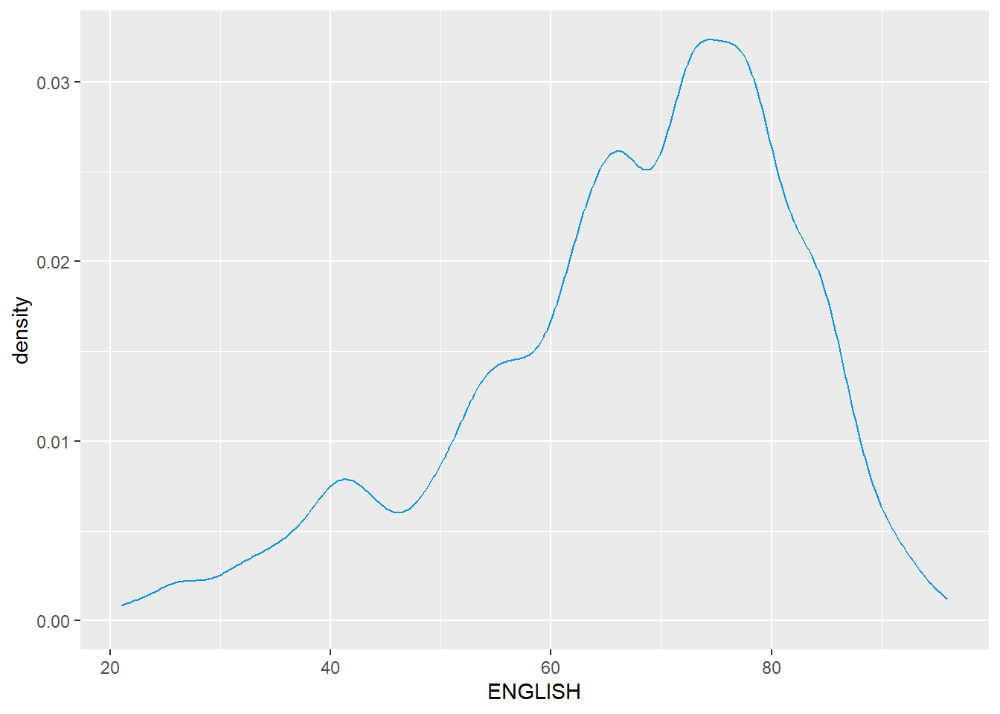
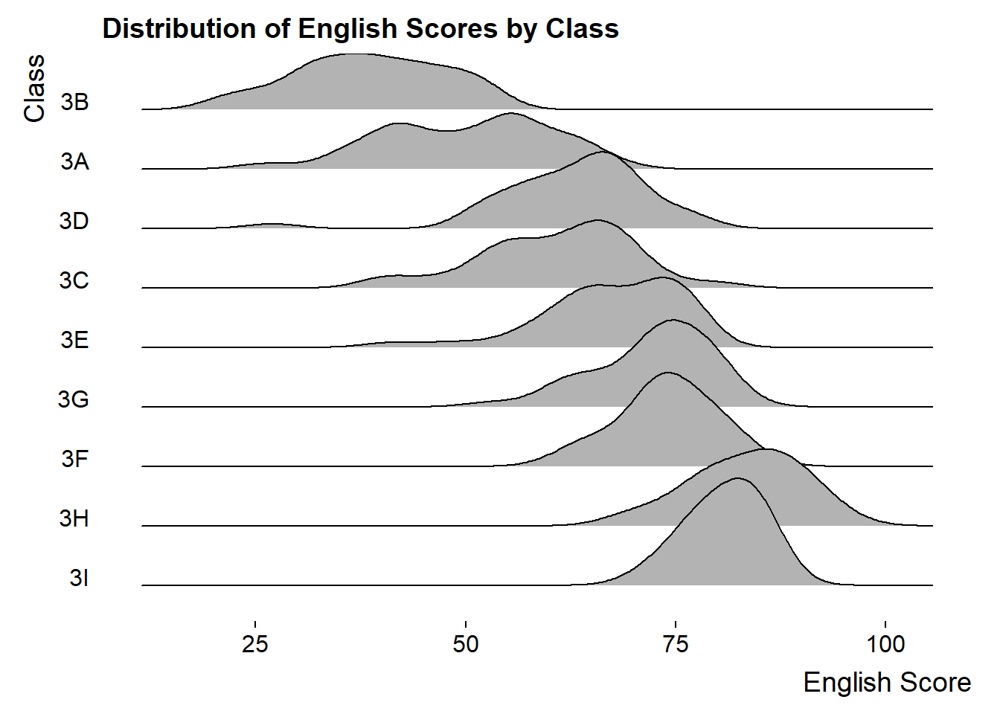

pacman::p_load(ggrepel, patchwork, ggthemes,
tidyverse, ggridges, ggdist,
colorspace) In-class Exercise 2
The first part of the lesson was to mingle with Tableau. We have published our first date with Tableau here. Moving on to R studio, we will be referring to Visualising Distributions read more here for this exercise.
#Load Package
exam_data <- read_csv("Exam_data.csv")
summary(exam_data) ID CLASS GENDER RACE
Length:322 Length:322 Length:322 Length:322
Class :character Class :character Class :character Class :character
Mode :character Mode :character Mode :character Mode :character
ENGLISH MATHS SCIENCE
Min. :21.00 Min. : 9.00 Min. :15.00
1st Qu.:59.00 1st Qu.:58.00 1st Qu.:49.25
Median :70.00 Median :74.00 Median :65.00
Mean :67.18 Mean :69.33 Mean :61.16
3rd Qu.:78.00 3rd Qu.:85.00 3rd Qu.:74.75
Max. :96.00 Max. :99.00 Max. :96.00 Histogram
Using the steps you have learned, build a histogram.
ggplot(data=exam_data,
aes(x = ENGLISH)) +
geom_histogram(bins=30,
color="black",
fill="light blue") Probability Density Plot
ggplot(data=exam_data,
aes(x = ENGLISH)) +
geom_density(
color = "#1696d2",
adjust = .54,
alpha = .6
)
The alternative design. (Missing median_eng because the class abruptly ended.)
median_eng <- median(exam_data$ENGLISH)
mean_eng <- mean(exam_data$ENGLISH)
std_eng <- (exam_data$ENGLISH)
ggplot(exam_data,
aes(x= ENGLISH)) +
geom_density(
color = "#1696d2",
adjust = .65,
alpha = .6) +
stat_function(
fun = dnorm,
args = list(mean = mean_eng,
sd = std_eng),
col = "grey10",
size = .8) +
geom_vline(
aes(xintercept = mean_eng),
color="#4d5887",
linewidth = .6,
linetype = "dashed") +
annotate(geom="text",
x = mean_eng - 8,
y = 0.04,
label = paste0("Mean ENGLISH: ",round((mean_eng),2)),
color = "#4d5887") Visualising Distribution with Ridgeline Plot
Read more here.
ggplot(exam_data, aes(x = ENGLISH, y = fct_relevel(CLASS, rev(unique(CLASS))))) +
geom_density_ridges() +
scale_y_discrete(labels = rev) + # This is to ensure the order of classes is from top to bottom
labs(title = "Distribution of English Scores by Class",
x = "English Score",
y = "Class") +
theme_ridges(grid = FALSE) 
ridgeline1 <- ggplot(exam_data,
aes(x = ENGLISH,
y = CLASS)) +
geom_density_ridges(
scale = 3,
rel_min_height = 0.01,
bandwidth = 3.4,
fill = lighten("#7097BB", .3),
color = "white"
) +
scale_x_continuous(
name = "English grades",
expand = c(0, 0)
) +
scale_y_discrete(name = NULL, expand = expansion(add = c(0.2, 2.6))) +
theme_ridges()ridgeline2 <- ggplot(exam_data,
aes(x = ENGLISH,
y = CLASS,
fill = stat(x))) +
geom_density_ridges_gradient(
scale = 3,
rel_min_height = 0.01) +
scale_fill_viridis_c(name = "Temp. [F]",
option = "C") +
scale_x_continuous(
name = "English grades",
expand = c(0, 0)
) +
scale_y_discrete(name = NULL, expand = expansion(add = c(0.2, 2.6))) +
theme_ridges()ridgeline3 <- ggplot(exam_data,
aes(x = ENGLISH,
y = CLASS,
fill = 0.5 - abs(0.5-stat(ecdf)))) +
stat_density_ridges(geom = "density_ridges_gradient",
calc_ecdf = TRUE) +
scale_fill_viridis_c(name = "Tail probability",
direction = -1) +
theme_ridges()ridgeline4 <- ggplot(exam_data,
aes(x = ENGLISH,
y = CLASS,
fill = factor(stat(quantile))
)) +
stat_density_ridges(
geom = "density_ridges_gradient",
calc_ecdf = TRUE,
quantiles = c(0.025, 0.975)
) +
scale_fill_manual(
name = "Probability",
values = c("#FF0000A0", "#A0A0A0A0", "#0000FFA0"),
labels = c("(0, 0.025]", "(0.025, 0.975]", "(0.975, 1]")
) +
theme_ridges()print(ridgeline1)
print(ridgeline2) 
print(ridgeline3) 
print(ridgeline4)
☁ Rainploud Plot
ggplot(exam_data,
aes(x = RACE,
y = ENGLISH)) +
stat_halfeye(adjust = 0.5,
justification = -0.2,
.width = 0,
point_colour = NA)
ggplot(exam_data,
aes(x = RACE,
y = ENGLISH)) +
stat_halfeye(adjust = 0.5,
justification = -0.2,
.width = 0,
point_colour = NA) +
geom_boxplot(width = .20,
outlier.shape = NA)
ggplot(exam_data,
aes(x = RACE,
y = ENGLISH)) +
stat_halfeye(adjust = 0.5,
justification = -0.2,
.width = 0,
point_colour = NA) +
geom_boxplot(width = .20,
outlier.shape = NA) +
stat_dots(side = "left",
justification = 1.2,
binwidth = .5,
dotsize = 2)
ggplot(exam_data,
aes(x = RACE,
y = ENGLISH)) +
stat_halfeye(adjust = 0.5,
justification = -0.2,
.width = 0,
point_colour = NA) +
geom_boxplot(width = .20,
outlier.shape = NA) +
stat_dots(side = "left",
justification = 1.2,
binwidth = .5,
dotsize = 1.5) +
coord_flip() +
theme_economist()